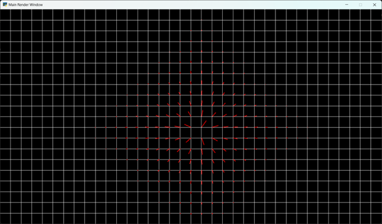

A simple example vector field simulation wherein the mouse acts as an anonymous particle or force. The point of this project was to display the ability to create a vector field that could then be adjusted with a force in the future for a targeted simulation.
